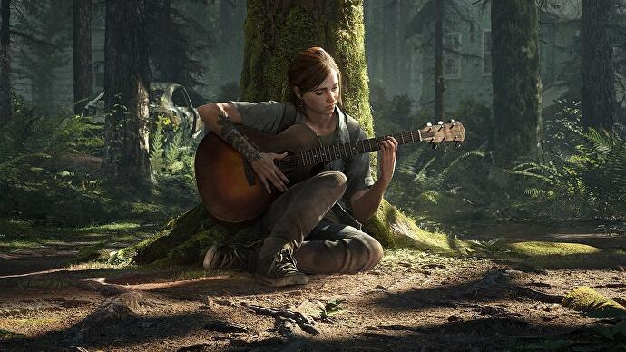
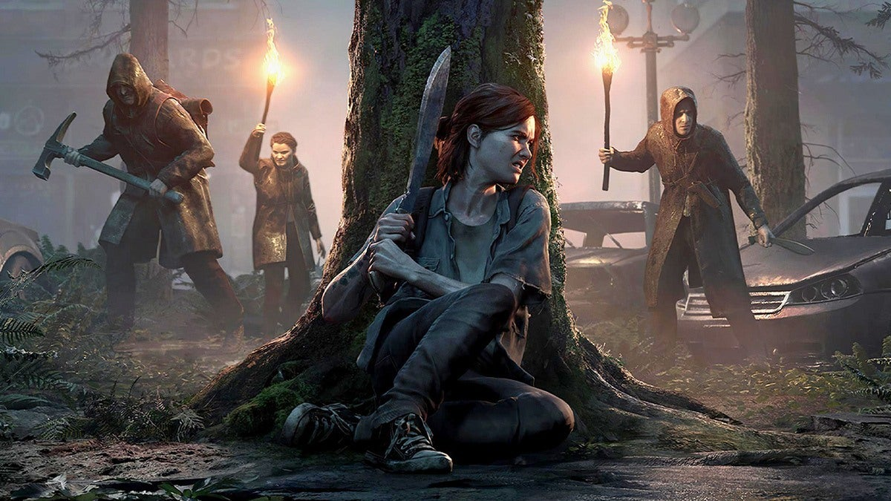

The last of us 2

the game story is in years after the first part of the game and it focuses on two playable characters
in a post-apocalyptic United States whose lives intertwine:
-
Ellie, who sets out in revenge for a murder.
-
Abby, a soldier who becomes involved in a conflict between her militia and a religious cult.
Ellie, who sets out in revenge for a murder.
Abby, a soldier who becomes involved in a conflict between her militia and a religious cult.
The Last of Us 2 is an action-adventure game played from a third-person perspective. featuring elements of the survival horror genre.
